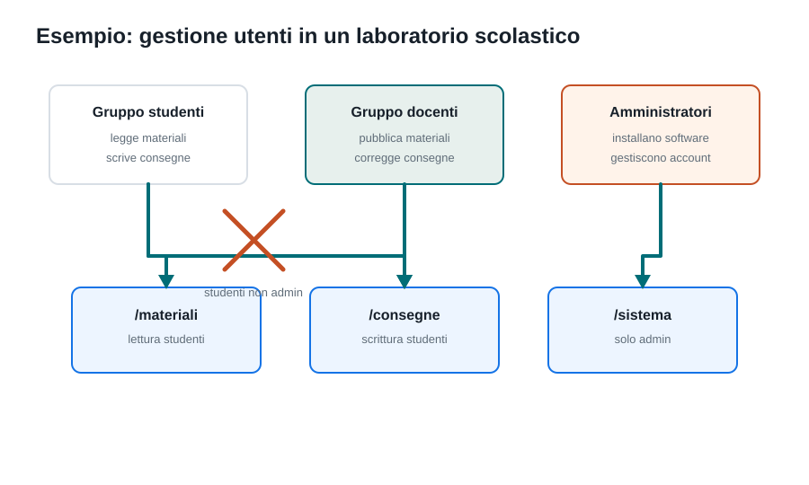
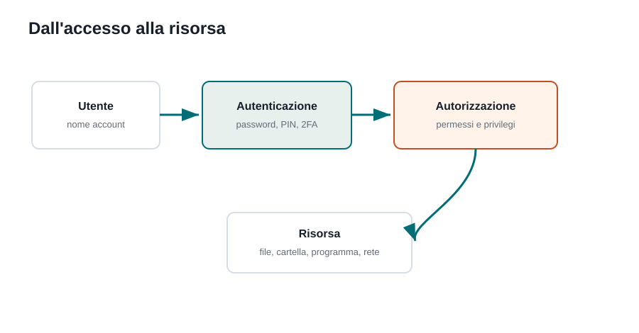
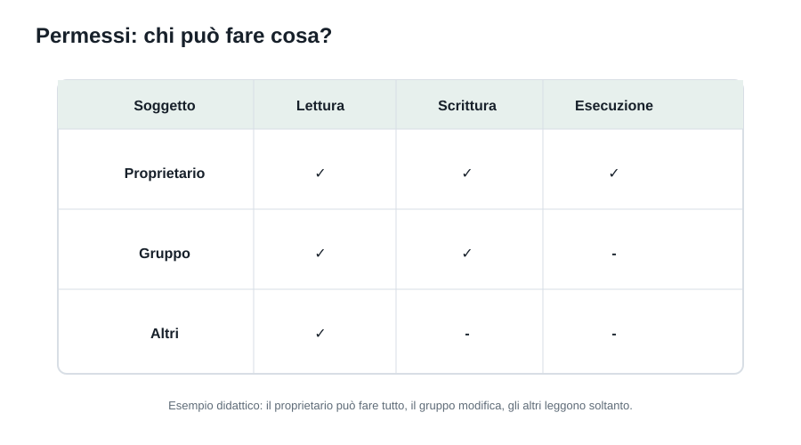
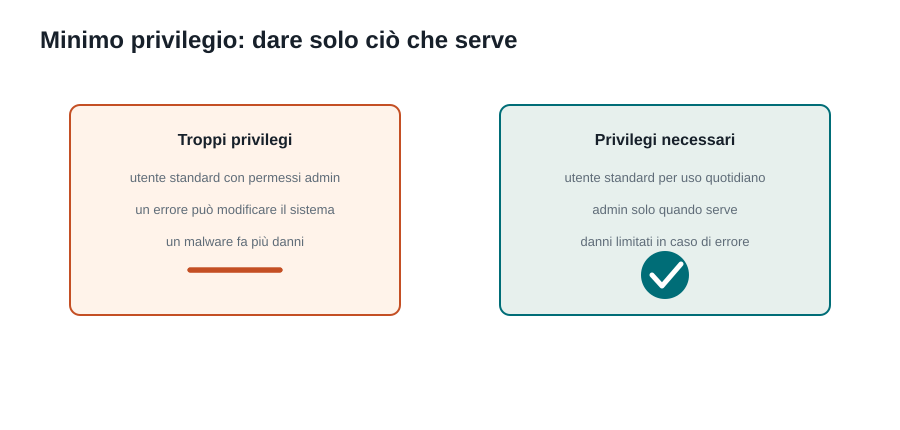

Capitoletto 2
Utenti e sicurezza
Il sistema operativo non deve solo far partire programmi: deve riconoscere chi usa il computer, separare i dati, limitare i privilegi e registrare gli eventi importanti.
Obiettivi della lezione
- Capire perché un sistema operativo distingue utenti, gruppi e amministratori.
- Distinguere autenticazione, autorizzazione e tracciamento.
- Interpretare i permessi di lettura, scrittura ed esecuzione.
- Applicare il principio del minimo privilegio a esempi scolastici e reali.
- Riconoscere buone pratiche di sicurezza nell'uso quotidiano del computer.
Perché esistono gli utenti
In un computer personale può esserci un solo utilizzatore. In un laboratorio, in un server o in una rete scolastica, invece, più persone e programmi usano le stesse risorse. Il sistema operativo deve quindi sapere chi sta lavorando e quali azioni sono consentite.
Un account utente rappresenta un'identità. Di solito contiene nome utente, credenziali di accesso, cartella personale, impostazioni e permessi. Grazie agli account, i documenti di uno studente non si mescolano con quelli di un altro e le configurazioni importanti restano protette.
Utenti, gruppi e ruoli

Un utente è una singola identità. Un gruppo raccoglie utenti con permessi simili. Un ruolo descrive il tipo di responsabilità: studente, docente, tecnico, amministratore o servizio di sistema.
| Elemento | Che cos'è | Esempio |
|---|---|---|
| Utente | Identità singola che accede al sistema. | mario.rossi |
| Gruppo | Insieme di utenti con permessi comuni. | studenti, docenti, tecnici |
| Ruolo | Responsabilità o livello di privilegio. | standard, docente, amministratore |
| Servizio | Account usato da un programma di sistema. | server web, database, backup |
Tipi di account
Non tutti gli account hanno lo stesso potere. Separare i tipi di account riduce i danni causati da errori, malware o configurazioni sbagliate.
| Tipo di account | Cosa può fare | Rischio principale |
|---|---|---|
| Utente standard | Usa applicazioni, salva file personali, modifica impostazioni non critiche. | Non può risolvere tutto da solo, ma è più sicuro. |
| Docente o responsabile | Gestisce materiali, cartelle di classe e consegne. | Permessi troppo ampi possono esporre dati degli studenti. |
| Amministratore | Installa software, cambia configurazioni, crea utenti, modifica permessi. | Un errore può compromettere l'intero sistema. |
| Account di servizio | Fa funzionare programmi automatici come backup o server. | Se configurato male, può diventare un punto debole nascosto. |
Autenticazione, autorizzazione, tracciamento

La sicurezza degli accessi si può dividere in tre momenti. Prima il sistema controlla l'identità dell'utente; poi verifica i suoi permessi; infine registra gli eventi importanti nei log.
| Fase | Domanda | Esempio |
|---|---|---|
| Autenticazione | Chi sei? | Password, PIN, impronta, smart card, secondo fattore. |
| Autorizzazione | Cosa puoi fare? | Puoi leggere una cartella, ma non cancellarla. |
| Tracciamento | Che cosa è successo? | Il sistema registra accessi, errori e modifiche importanti. |
Password, MFA e sessioni
Una password serve a dimostrare l'identità, ma da sola può non bastare. Per questo molti sistemi usano la MFA, autenticazione a più fattori: oltre alla password chiedono un secondo elemento, per esempio un codice temporaneo, una notifica sul telefono o una chiave fisica.
| Fattore | Idea | Esempio |
|---|---|---|
| Qualcosa che sai | Informazione memorizzata dall'utente. | Password o PIN. |
| Qualcosa che hai | Oggetto o dispositivo posseduto. | Telefono, token, smart card. |
| Qualcosa che sei | Caratteristica personale. | Impronta digitale o riconoscimento del volto. |
Dopo l'accesso, il sistema crea una sessione. La sessione evita di chiedere la password a ogni operazione, ma deve essere protetta: quando ci si allontana dal computer, lo schermo va bloccato.
Permessi su file e cartelle

I permessi indicano quali operazioni sono consentite su una risorsa. I tre permessi fondamentali sono lettura, scrittura ed esecuzione. Il loro significato cambia leggermente tra file e directory.
| Permesso | Su un file | Su una directory |
|---|---|---|
| Lettura | Aprire e leggere il contenuto. | Vedere l'elenco dei file contenuti. |
| Scrittura | Modificare o cancellare il contenuto. | Creare, rinominare o eliminare elementi. |
| Esecuzione | Avviare un programma o uno script. | Entrare nella directory o attraversarla in un percorso. |
Permessi in Windows e Linux
I sistemi operativi possono rappresentare i permessi in modi diversi. Linux usa spesso il modello proprietario-gruppo-altri con lettere come r, w, x. Windows usa ACL, cioè elenchi più dettagliati che indicano utenti, gruppi e operazioni permesse o negate.
| Sistema | Come ragiona | Esempio |
|---|---|---|
| Linux/Unix | Permessi per proprietario, gruppo e altri. | rwxr-x---: proprietario completo, gruppo lettura/esecuzione, altri niente. |
| Windows | ACL con regole per utenti e gruppi. | Il gruppo Docenti può modificare, il gruppo Studenti può solo leggere. |
Il principio del minimo privilegio

Il principio del minimo privilegio dice che un utente o un programma deve avere solo i permessi necessari per svolgere il proprio compito. È una delle regole più importanti della sicurezza informatica.
Se un programma deve soltanto leggere immagini, non dovrebbe poter modificare file di configurazione. Se uno studente deve consegnare un compito, non deve poter cancellare le consegne degli altri. Se un amministratore deve navigare sul web, è meglio che usi un account standard e passi ad amministratore solo quando serve.
Caso pratico: cartella di classe
Supponiamo di organizzare una cartella condivisa per una classe. Vogliamo evitare confusione e proteggere i lavori degli studenti.
| Cartella | Studenti | Docenti | Motivo |
|---|---|---|---|
/materiali | lettura | lettura e scrittura | Gli studenti scaricano dispense; i docenti le aggiornano. |
/consegne | scrittura limitata | lettura e scrittura | Gli studenti consegnano; i docenti correggono. |
/soluzioni | nessun accesso prima della verifica | lettura e scrittura | Le soluzioni non devono essere visibili in anticipo. |
/sistema | nessun accesso | nessun accesso normale | Configurazioni gestite solo dal tecnico o dall'amministratore. |
Log e controlli
I log sono registri degli eventi. Non servono a spiare gli utenti: servono a capire cosa è successo quando c'è un problema, un errore di accesso, una modifica importante o un comportamento sospetto.
| Evento registrato | Perché è utile |
|---|---|
| Accesso riuscito | Mostra chi è entrato e quando. |
| Password sbagliata | Può indicare un errore o un tentativo di accesso non autorizzato. |
| Modifica dei permessi | Aiuta a ricostruire chi ha cambiato l'accesso a una risorsa. |
| Installazione di software | Permette di controllare modifiche importanti al sistema. |
| Errore di servizio | Aiuta il tecnico a capire perché un programma o un server non funziona. |
Buone pratiche quotidiane
- Usare un account standard per le attività normali e l'account amministratore solo quando necessario.
- Non condividere password, nemmeno nel laboratorio scolastico.
- Bloccare lo schermo quando ci si allontana dalla postazione.
- Controllare bene a chi si danno permessi di scrittura, perché scrivere spesso significa anche poter cancellare.
- Rimuovere account non più usati e rivedere periodicamente gruppi e permessi.
- Leggere i messaggi di richiesta privilegi: se un programma chiede permessi amministrativi, deve esserci un motivo chiaro.
Mappa di ripasso
| Parola chiave | Definizione breve | Domanda da farsi |
|---|---|---|
| Account | Identità usata per accedere al sistema. | Chi sta lavorando? |
| Gruppo | Insieme di account con permessi comuni. | A quale insieme appartiene? |
| Autenticazione | Verifica dell'identità. | Come dimostri chi sei? |
| Autorizzazione | Controllo dei permessi. | Che cosa puoi fare? |
| Log | Registrazione degli eventi. | Che cosa è successo? |
| Minimo privilegio | Solo i permessi necessari. | Questo permesso serve davvero? |
Esercizi guidati
- Disegna tre utenti e due gruppi per un laboratorio scolastico. Indica quali cartelle possono leggere o modificare.
- Spiega la differenza tra autenticazione e autorizzazione usando l'esempio dell'ingresso a scuola.
- Progetta i permessi per una cartella
/verifiche: chi può leggere? chi può scrivere? quando? - Trova un esempio di minimo privilegio in un'app del telefono o del computer.
- Scrivi tre regole di comportamento per evitare problemi di sicurezza in laboratorio.
- Spiega perché un account amministratore non dovrebbe essere usato per navigare normalmente sul web.
Domande con risposta semplice
Perché il sistema operativo deve sapere chi sono?
Per separare i dati, applicare i permessi corretti e impedire che una persona faccia azioni riservate ad altri.
Che differenza c'è tra autenticazione e autorizzazione?
L'autenticazione controlla chi sei. L'autorizzazione controlla che cosa puoi fare dopo essere entrato.
A cosa servono i gruppi?
Servono a gestire molti utenti insieme. Invece di dare permessi a ogni studente uno per uno, assegni i permessi al gruppo studenti.
Perché non conviene usare sempre l'account amministratore?
Perché un errore o un programma dannoso avrebbe più potere e potrebbe modificare parti importanti del sistema.
Un permesso di scrittura è pericoloso?
Può esserlo, perché spesso chi può scrivere può anche modificare o cancellare dati. Va dato solo quando serve davvero.
Che cosa sono i log?
Sono registri degli eventi. Aiutano a capire chi ha fatto un accesso, quando è avvenuto un errore o quale modifica è stata eseguita.
Che cos'è la MFA?
È l'autenticazione a più fattori: oltre alla password viene richiesto un secondo controllo, per esempio un codice sul telefono.
Che cosa significa minimo privilegio?
Significa dare a utenti e programmi solo i permessi necessari, niente di più.
Per ripassare
Ripeti in questo ordine: account, gruppi, ruoli, autenticazione, autorizzazione, permessi, log, minimo privilegio. Poi prova a spiegare la cartella di classe: se riesci a decidere chi legge e chi scrive, l'argomento è chiaro.